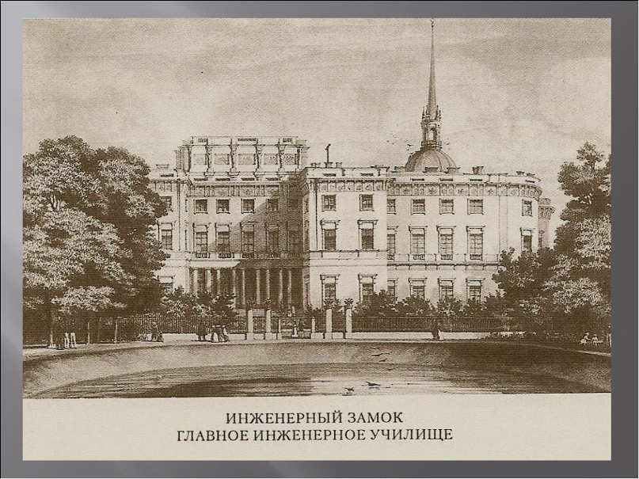
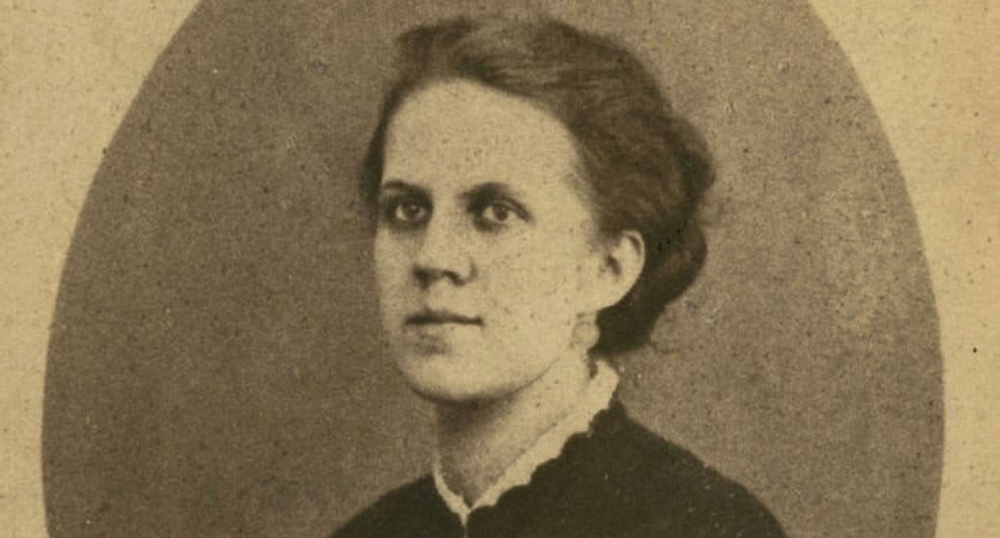
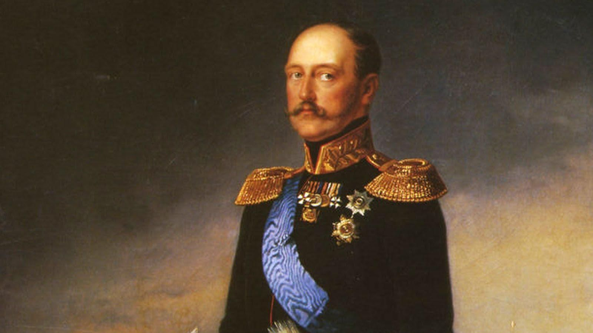
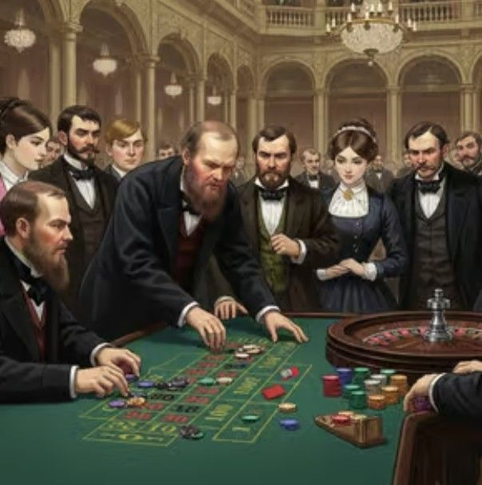
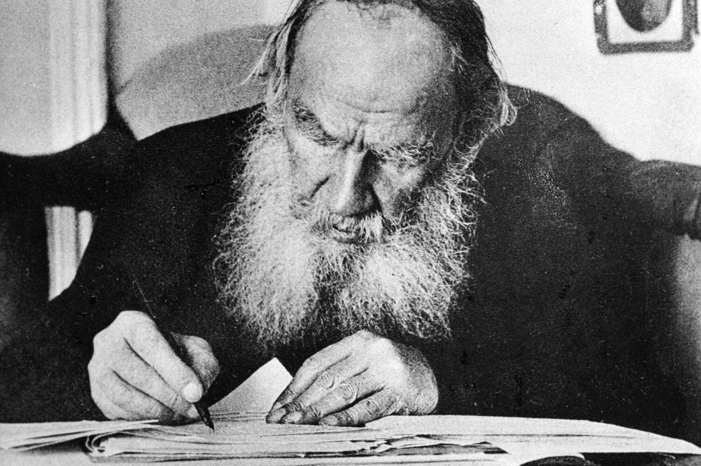
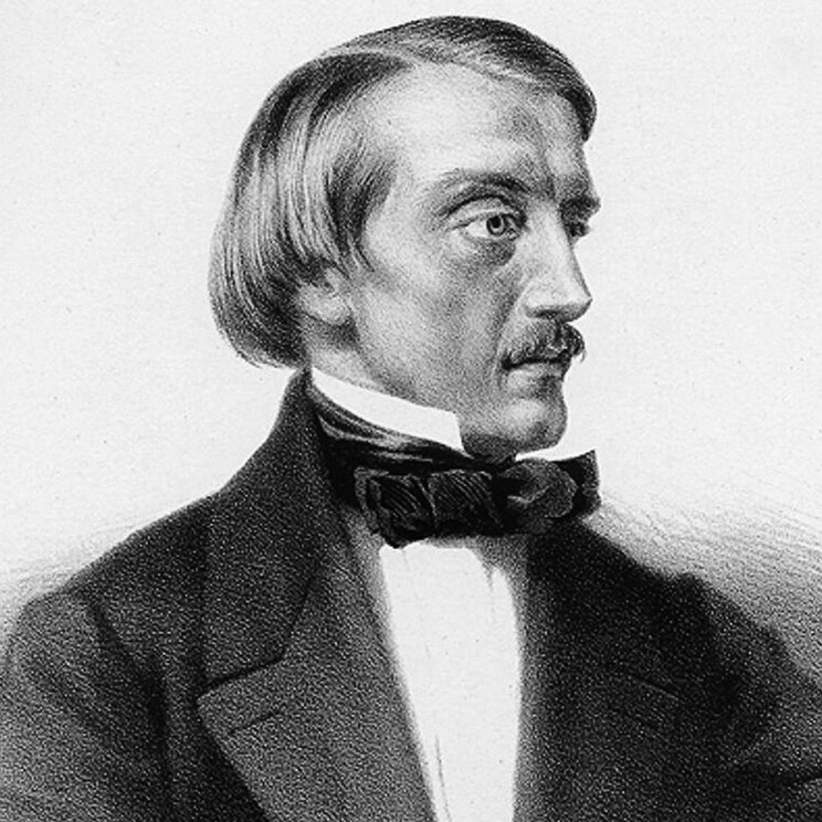
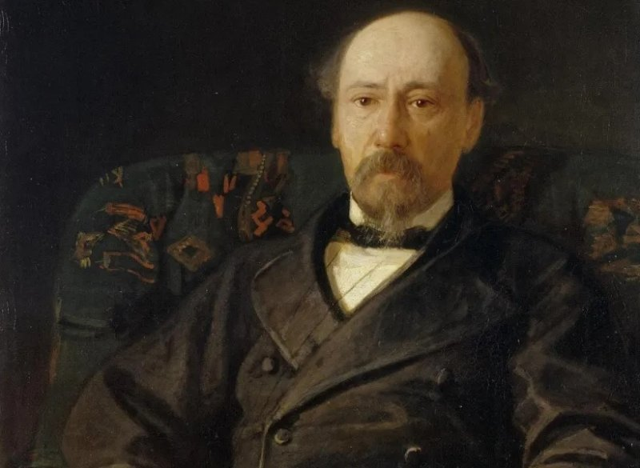
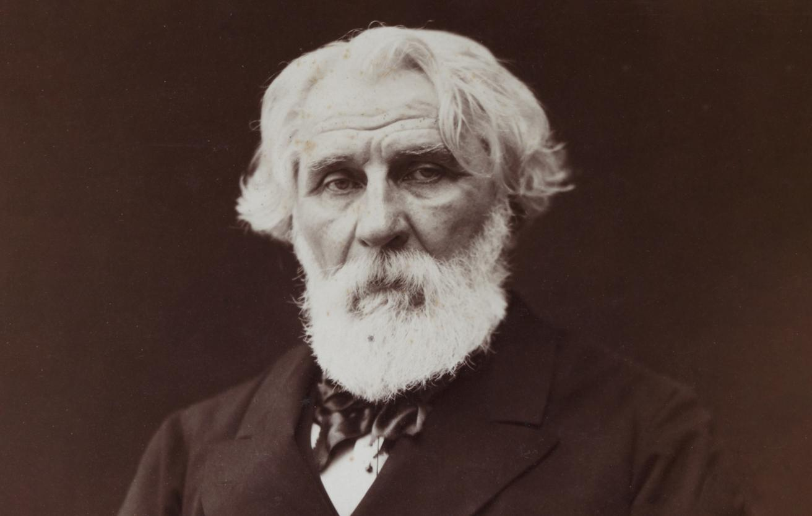

сегодня в 06:14
Вспоминаю Омский острог. Четыре года каторги. Самое страшное — бани. Восемь человек на пяти полках. И все молчат. Четыре года молчания — это хуже каторги. Зато материал для романа собрал.
❤️ 512💬 4
«Ночь. Жёлтый дом. Кажется, идёт Раскольников. Или это я.»
«Перечитал роман. Плакал. Жалко себя. В смысле, страдаю.»
«Смотрел на Пушкина. Написал речь. Заплакал. Всё как обычно.»







